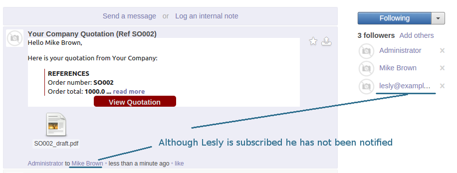

Select Checkbox to Make the Message Private

No Excess Notifications. Portals Can't View

The app is a tool to communicate with colleagues without interrupting followers. Odoo default functionality assumes that each time you send a message all subscribers (including your partners) are notified. As an alternative you may log an internal note without notifications. This approach hardly suits in a case you would like to communicate something important only to your colleague.
This app let avoid excess emails but simultaneously notify required partners.